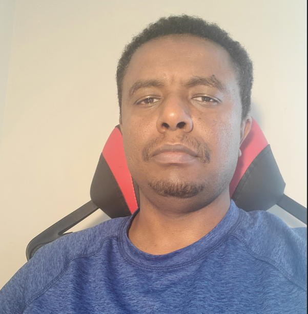

Roba Ejeta

Summary:
I'm a very motivated and dedicated fullstack web developer with over a year experience as a developer.
Education:
-
Bachelor of Science, Applied Geology
- Mekelle University, Ethiopia
- From 10/01/1999 to 07/26/2004
-
Certificate, A Fullstack web developement
- Evangadi Tech
- From 03/12/2022 to 08/24/2022
Work Experiences:
Frontend-Web Developer - BX4 Enginnering Ltd.
From 01/02/23 to current
-
Responsibilities:
- Assisted and managed daily activities
- Arranged team meetings as needed
- Build reusable code and labraries
- Collaborate with other team members
- Tested
- Updated and reported accomplished activities on a week basis
Skills:
-
Planning and managing crew members,anayzing drilling cost breakdown,Collecting drilling samples, Technical field report writing ⭐ ⭐ ⭐ ⭐ ⭐
-
Html, CSS, Bootstrap, JavaScript, Node.js, Github, MYSQL, React.js, Web Hosting, Web layout ⭐ ⭐ ⭐ ⭐
-
Microsoft office ⭐ ⭐ ⭐ ⭐
Awards and Certifications:
- Employee of the Month - BX4 Ltd.(April 2023)
Others: